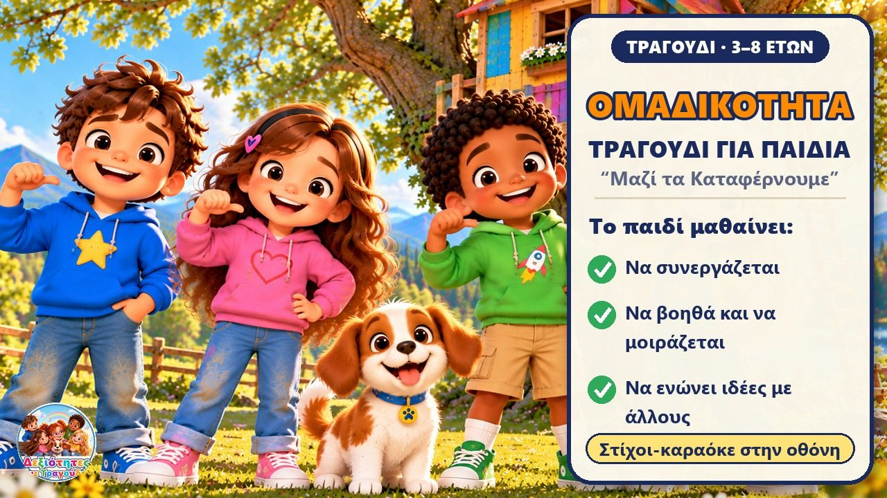
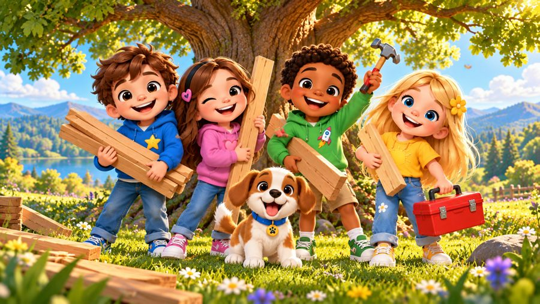
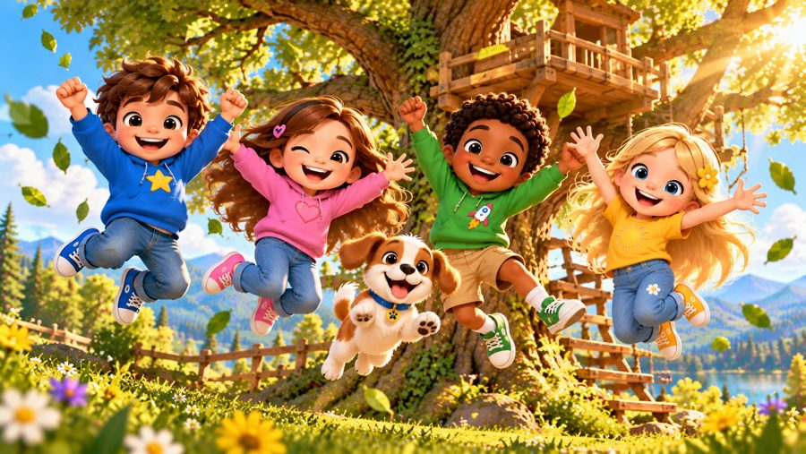
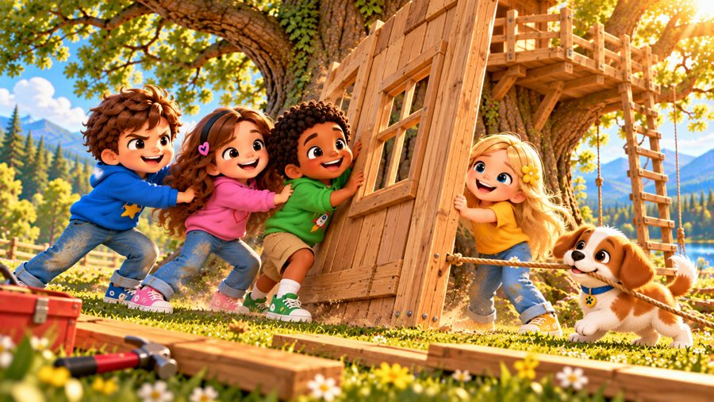

Μαζί τα Καταφέρνουμε
Ένα χαρούμενο τραγούδι για την ομαδικότητα! 🤝 Τραγουδήστε με τον Μαξ, τη Μία, τον Τζέι, τη Λίλη, τη Ρόζα και τον σκυλάκο Μπάντι, που μαθαίνουν ότι όταν βοηθάμε ο ένας τον άλλον, τα καταφέρνουμε πολύ καλύτερα!
🖍️ ΔΩΡΕΑΝ σελίδες ζωγραφικής, στίχοι & φύλλο δραστηριότητας για αυτό το τραγούδι ➜ dexiotitesmetragoudi.github.io

▶👨👩👧 Τι μαθαίνει το παιδί
- Να συνεργάζεται με άλλους για έναν κοινό στόχο
- Να ζητά και να προσφέρει βοήθεια: «Μπορώ να βοηθήσω;»
- Να μοιράζεται και να ακούει την ομάδα
- Να ενώνει τις δικές του ιδέες με τις ιδέες των φίλων του
- Ότι όταν κάτι πέφτει, το ξαναφτιάχνουμε μαζί
💬 Κουβέντα μετά το τραγούδι
- Πότε βοήθησες κάποιον σήμερα;
- Τι μπορούμε να φτιάξουμε μαζί που δεν μπορούμε μόνοι μας;
- Τι κάνουμε όταν ο καθένας έχει διαφορετική ιδέα;
🖨️ Δωρεάν εκτυπώσιμα
Δωρεάν για χρήση στο σπίτι και στην τάξη. Εκτυπώστε σε χαρτί Α4.
🖼️ Σκηνές από το τραγούδι






🎤 Στίχοι – Μαζί τα Καταφέρνουμε
Έλα εσύ, έρχομαι κι εγώ,
έχουμε έναν στόχο κοινό!
Χέρι με χέρι, όλοι μαζί,
πάμε να δούμε τι θα συμβεί!
Θέλω να φτιάξω κάτι ψηλό,
μα είναι δύσκολο να το κάνω μοναχός.
«Μπορώ να βοηθήσω;» μου λέει ένα παιδί,
και τότε αρχίζει η συνεργασία μαζί!
Εσύ βάλε εκείνο, εγώ βάζω αυτό,
κι αν κάτι πέσει, το ξαναφτιάχνω εγώ.
Ο ένας βοηθάει, ο άλλος κρατά,
κι αυτό που ήταν δύσκολο γίνεται χαρά!
Εσύ έχεις μια ιδέα,
κι εγώ έχω άλλη μια,
τις βάζουμε μαζί
και γίνονται μαγικά!
Μαζί τα καταφέρνουμε,
μαζί είναι πιο καλά!
Βοηθάω εγώ, βοηθάς κι εσύ,
και φτάνουμε ψηλά!
Μαζί τα καταφέρνουμε,
σαν μια δυνατή ομάδα!
Μοιραζόμαστε, βοηθάμε,
και προχωράμε πάντα!
Χέρι με χέρι,
εγώ κι εσύ,
όταν συνεργαζόμαστε
μπορούμε πιο πολύ!
Έχουμε χρώματα και ένα χαρτί,
μα ο καθένας έχει διαφορετική ιδέα εκεί.
«Εγώ θέλω ήλιο!»
«Εγώ ένα δεντράκι!»
«Κι εγώ ένα ουράνιο τόξο λιγάκι!»
Δεν χρειάζεται να διαλέξουμε μόνο ένα,
μπορούμε να τα ζωγραφίσουμε όλα ενωμένα!
Ο καθένας προσθέτει κάτι δικό του,
κι η ζωγραφιά γίνεται έργο όλων μας!
Εσύ έχεις μια ιδέα,
κι εγώ έχω άλλη μια,
τις βάζουμε μαζί
και γίνονται μαγικά!
Μαζί τα καταφέρνουμε,
μαζί είναι πιο καλά!
Βοηθάω εγώ, βοηθάς κι εσύ,
και φτάνουμε ψηλά!
Μαζί τα καταφέρνουμε,
σαν μια δυνατή ομάδα!
Μοιραζόμαστε, βοηθάμε,
και προχωράμε πάντα!
Χέρι με χέρι,
εγώ κι εσύ,
όταν συνεργαζόμαστε
μπορούμε πιο πολύ!
Ποιος μπορεί να βοηθήσει;
ΕΓΩ!
Ποιος μπορεί να μοιραστεί;
ΕΓΩ!
Ποιος ακούει την ομάδα;
ΕΓΩ!
Και ποιοι θα το καταφέρουν;
ΟΛΟΙ ΜΑΖΙ!
Ένας έχει μια ιδέα,
άλλος βρίσκει τη λύση,
κι όταν όλοι βοηθάμε,
τίποτα δεν μας σταματά!
Μαζί τα καταφέρνουμε,
μαζί είναι πιο καλά!
Βοηθάω εγώ, βοηθάς κι εσύ,
και φτάνουμε ψηλά!
Μαζί τα καταφέρνουμε,
σαν μια δυνατή ομάδα!
Μοιραζόμαστε, βοηθάμε,
και προχωράμε πάντα!
Εσύ κι εγώ,
κι όλοι μαζί,
ο καθένας βοηθάει
όσο μπορεί!
Χέρι με χέρι,
με μια καρδιά,
μαζί τα καταφέρνουμε
πολύ πιο δυνατά!
Μόνος μπορώ να προσπαθώ,
μαζί μπορούμε πιο πολύ!
Εγώ κι εσύ,
όλοι μαζί...
Μια δυνατή ομάδα!